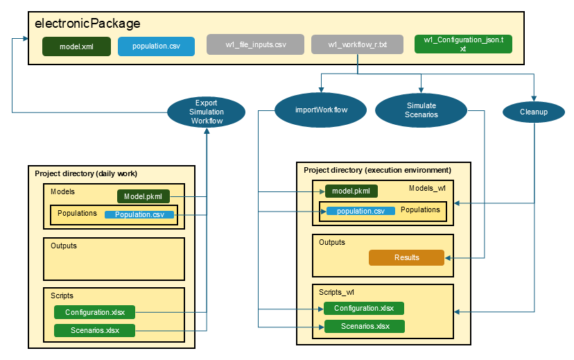

Electronic Package
Electronic_Package.RmdIntroduction
In the realm of regulatory submissions, the ability to produce
transparent and reproducible reports is paramount. The
ePackage functionality within the
OSPSuite.ReportingFramework addresses this need by allowing
users to seamlessly export workflows that generate Good Clinical
Practice (GCP) relevant documents into a structured electronic
package.
This functionality is designed to extract essential components from the project structure, including models, data, and configuration files, ensuring that all critical elements are systematically organized. By automating this extraction process, users can focus on their analyses without worrying about manual file management, which can lead to errors and inconsistencies.
The outputs for reports are generated through well-defined scripts included in the package. These scripts are integral to the workflow, allowing for consistent execution of analyses and ensuring that results can be easily reproduced. This not only enhances the reliability of the findings but also fosters confidence among regulatory agencies, as every output is traceable back to a standardized process.
By providing a comprehensive electronic package that consolidates all
relevant files in accepted formats, such as CSV, XML, and TXT, the
OSPSuite.ReportingFramework simplifies the submission
process. Users can easily share this organized package with regulatory
bodies, complete with README files that outline its contents and provide
clear instructions for use. This approach not only streamlines the
workflow but also upholds the highest standards of transparency and
reproducibility in clinical research.
Typical Workflows of an Activity
The following table outlines typical workflows associated with activities in the OSPSuite context, highlighting their relevance to the electronic package:
| Identifier | Description | ePackage Relevance | Inputs (green italic: already QCed) |
Outputs | Comments |
|---|---|---|---|---|---|
| P1 | Preparatory scripts or action | Internal | Workflow script configuration tables | Inputs for other workflows e.g., populations | |
| We1 | Export of simulation workflow | Internal | Workflow script for export configuration tables, pkmls, populations | ePackage files | Typically time-consuming. Customization is uncommon. Re-runs are only necessary if changes occur in the model. |
| W1 | Execution of simulation workflow | Part of ePackage | ePackage files | Simulation and PK-Analysis Results | Typically time-consuming. Customization is uncommon. Re-runs are only necessary if changes occur in the model. |
| We2 | Export of TLF generation workflow | Internal | Workflow script for export, workflow script for execution configuration tables, custom functions, simulation and PK-Analysis Results | ePackage files | Fast execution. Customization is common. Re-runs are often requested. |
| W2 | Execution of TLF generation workflow | Part of ePackage | ePackage files | TLFs | Fast execution. Customization is common. Re-runs are often requested. |
| A1 | Appendix generation | Internal | TLFs | Word document |
This table illustrates how various workflows contribute to the electronic package, ensuring that all necessary components are included for successful analysis and reporting. The simulation and TLF workflows are split; the first is time-consuming but straightforward, typically executed only once in a project, while the second runs quickly and is often executed multiple times as figures are refined during discussions.
Electronic Package Folder
The folder for the electronic package is part of the project
configuration. You can access it by calling
projectConfiguration$addOns$electronicPackageFolder and set
it to another folder by overwriting the default:
projectConfiguration$addAddOnFolderToConfiguration(
property = "electronicPackageFolder",
value = "my/new/path",
description = "my custom folder for ePackage"
)The exported electronic package will contain the following after the export: - All relevant model, population, data, configuration, and script files organized in a flat directory structure needed to reproduce the results. - All files will be in accepted formats such as CSV, XML, and TXT with valid file names.
You should manually add: - README files that outline the contents of the package and instructions for use.
Once you have exported the workflows, you can use them internally to produce your results or share this folder with regulatory agencies.
How to Use the Workflow Exporter
Step 1: Setting Up Inputs for Your Workflow
Before exporting your workflow, ensure that you have completed the necessary steps in your analysis. This includes defining your input data, setting up your models, and exporting populations.
Step 2: Simulation Workflows
-
Exporting Simulation Workflows
To export your simulation workflow, utilize the
exportSimulationWorkflowToEPackage()function. This function uses the project structure you have built in your daily work and exports necessary files into the electronic package folder. (See figure below) All files are checked for valid file names and valid formats. Only the necessary sheets and entries of the configuration files are exported.
Here’s how to use it:
# Export the simulation workflow to an electronic package
exportSimulationWorkflowToEPackage(
projectConfiguration = projectConfiguration,
wfIdentifier = 1,
scenarioNames = c("scenario1", "scenario2")
)You just need to provide the workflow with an identifier and specify
the scenarios you want to use. See the function help
? exportSimulationWorkflowToEPackage for more
information.
- Running Simulation Workflows
Within the electronic package folder, a workflow file will now exist.
For wfIdentifier = 1, it will be
w1_workflow_r.txt.
At the beginning of the workflow, a variable
projectDirectory is defined. By default, it is set to your
current project directory. If only the package is available, this has to
be adjusted.
As shown in the figure below, the workflow consists of three steps
importWorkflow: The first step builds a project directory with all necessary folders and files to simulate the scenarios. The output folder uses the same name as in your project configuration, while all other folders are newly generated with the suffix
_w<wfIdentifier>. This ensures that you do not accidentally overwrite existing files like configuration tables.scenario simulation: The scenarios are simulated and filed as usual. Existing results in the output folder will be overwritten.
Cleanup: All temporary folders are deleted. If you want to keep the folders, set the variable
Cleanupat the beginning of the workflow toFALSE.

Step 3: TLF Workflows
- Exporting TLF Workflows
The implementation of the TLF generation workflow is similar to that of the simulation workflow. However, while the simulation workflow requires only a list of scenarios for export, the TLF generation process necessitates additional information, such as:
- Data to be used
- Plot functions, plot configuration, and inputs
- Custom functions
The workflow export uses a workflow.Rmd as input. The
workflow.Rmd resembles a ‘normal’ workflow, and executing
the Rmd in the daily work environment generates the desired plots. All
steps are structured to be easily read and understood by the workflow
importer.
The package provides a template for the workflow.Rmd.
You can open a template for workflow.Rmd using the Addins
feature in RStudio. This template provides a structured format to guide
you in creating your TLF workflow. Simply navigate to the Addins menu in
RStudio and select the option
Open Template ePackage Workflow RMD, or call
openEPackageTemplate(). The template contains further
documentation on how to use it.
Below is the export call using the ‘workflow.Rmd’ as input:
# Export the TLF workflow to an electronic package
exportTLFWorkflowToEPackage(
projectConfiguration = projectConfiguration,
wfIdentifier = 2,
workflowRmd = "path/to/myWorkflow.Rmd"
)See the function help ? exportTLFWorkflowToEPackage for
more information.
- Running TLF Workflows
Running a TLF workflow is very similar to running a simulation workflow; however, in Step 2, it will produce figures instead of simulating scenarios.
Step 4: Report Generation
While the ePackage functionality ensures that all
figures and tables can be reproduced consistently, the process of
generating a comprehensive report that combines these elements into a
Word document is not included within the workflows included in the
ePackage.
To create a cohesive report, you can use the report generation
functionality of this package, which will use the markdown documents
produced by the ePackage. See vignette ‘Plot and Report
Generation’ for more information
Conclusion
In summary, the ePackage functionality of the
OSPSuite.ReportingFramework is a powerful tool designed to
enhance the efficiency and reliability of regulatory submissions. By
automating the extraction and organization of essential components from
project structures, this feature significantly reduces the risk of error
and ensures that all necessary files are readily available in a
standardized format.
The ability to generate reproducible reports through well-defined scripts not only streamlines the workflow but also fosters confidence among stakeholders by providing transparency in the analysis process. With the inclusion of comprehensive README files and the option to customize the electronic package, users can tailor their submissions to meet specific regulatory requirements.
As you explore the capabilities of the
OSPSuite.ReportingFramework, we encourage you to leverage
the ePackage functionality to enhance your reporting
processes. By embracing these tools, you can ensure that your clinical
research is presented with the highest standards of integrity and
clarity, ultimately contributing to the advancement of scientific
knowledge and regulatory compliance.
For further assistance or to share your experiences with the
ePackage functionality, please feel free to reach out to
the community or consult the official documentation.